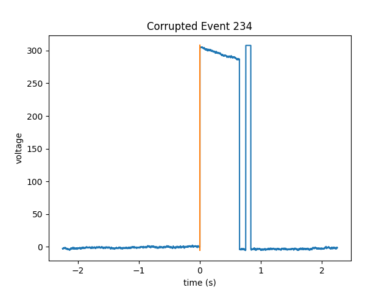

Note
Click here to download the full example code
Manually Recover Events Not Found by the Algorithm¶
In this example, we use pd-parser to find photodiode events that
have corrupted pre-event baselines, photodiode plateaus or post-event
baselines but not corrupted onsets or offsets.
Note that it might be a good idea not to recover these events
as there might be noise in the data around this time.
# Authors: Alex Rockhill <aprockhill@mailbox.org>
#
# License: BSD (3-clause)
Simulate data and use it to make a raw object:
We’ll make an mne.io.Raw object so that we can save out some random data with a photodiode event channel in it in fif format (a commonly used electrophysiology data format).
import os.path as op
import numpy as np
import mock
import mne
from mne.utils import _TempDir
import pd_parser
from pd_parser.parse_pd import _to_tsv
import matplotlib.pyplot as plt
out_dir = _TempDir()
# simulate photodiode data
np.random.seed(29)
n_events = 300
# let's make our photodiode events on random uniform from 0.25 to 0.75 seconds
n_secs_on = np.random.random(n_events) * 0.5 + 0.25
raw, beh_df, events, _ = \
pd_parser.simulate_pd_data(n_events=n_events, n_secs_on=n_secs_on,
prop_corrupted=0.0)
sfreq = np.round(raw.info['sfreq']).astype(int)
# corrupt some events
corrupted_indices = [8, 144, 234]
amount = raw._data.max()
fig, axes = plt.subplots(1, len(corrupted_indices), figsize=(8, 4))
fig.suptitle('Corrupted Events')
axes[0].set_ylabel('voltage')
for j, i in enumerate(events[corrupted_indices, 0]):
if j == 0:
raw._data[0, i - sfreq // 3: i - sfreq // 4] = -amount
elif j == 1:
raw._data[0, i + sfreq // 4: i + sfreq // 3] = -amount
else:
raw._data[0, i + 2 * sfreq // 3: i + 4 * sfreq // 4] = amount
axes[j].plot(np.linspace(-1, 2, 3 * sfreq),
raw._data[0, i - sfreq: i + sfreq * 2])
axes[j].set_xlabel('time (s)')
# make fake electrophysiology data
info = mne.create_info(['ch1', 'ch2', 'ch3'], raw.info['sfreq'],
['seeg'] * 3)
raw2 = mne.io.RawArray(np.random.random((3, raw.times.size)) * 1e-6, info)
raw2.info['lowpass'] = raw.info['lowpass'] # these must match to combine
raw.add_channels([raw2])
# bids needs these data fields
raw.info['dig'] = None
raw.info['line_freq'] = 60
# save to disk as required by ``pd-parser``
fname = op.join(out_dir, 'sub-1_task-mytask_raw.fif')
raw.save(fname)
# add some offsets to the behavior so it's a bit more realistic
offsets = np.random.randn(n_events) * 0.001
beh_df['time'] = np.array(beh_df['time']) + offsets
behf = op.join(out_dir, 'sub-1_task-mytask_beh.tsv')
_to_tsv(behf, beh_df)

Out:
Creating RawArray with float64 data, n_channels=1, n_times=2044106
Range : 0 ... 2044105 = 0.000 ... 2044.105 secs
Ready.
Creating RawArray with float64 data, n_channels=3, n_times=2044106
Range : 0 ... 2044105 = 0.000 ... 2044.105 secs
Ready.
Writing /private/var/folders/s4/y1vlkn8d70jfw7s8s03m9p540000gn/T/tmp_mne_tempdir_zhxg4cq6/sub-1_task-mytask_raw.fif
Closing /private/var/folders/s4/y1vlkn8d70jfw7s8s03m9p540000gn/T/tmp_mne_tempdir_zhxg4cq6/sub-1_task-mytask_raw.fif [done]
Find the photodiode events relative to the behavioral timing of interest:
This function will use the default parameters to find and align the photodiode events, recovering the events that we just corrupted.
Note that the mock function mocks user input so when you run the example, you want to delete that line and unindent the next line, and then provide your own input depending on whether you want to keep the events or not.
with mock.patch('builtins.input', return_value='y'):
pd_parser.parse_pd(fname, pd_event_name='Stim On', behf=behf,
pd_ch_names=['pd'], beh_col='time', recover=True)


- 

Out:
Reading in /var/folders/s4/y1vlkn8d70jfw7s8s03m9p540000gn/T/tmp_mne_tempdir_zhxg4cq6/sub-1_task-mytask_raw.fif
Opening raw data file /var/folders/s4/y1vlkn8d70jfw7s8s03m9p540000gn/T/tmp_mne_tempdir_zhxg4cq6/sub-1_task-mytask_raw.fif...
Isotrak not found
Range : 0 ... 2044105 = 0.000 ... 2044.105 secs
Ready.
Reading 0 ... 2044105 = 0.000 ... 2044.105 secs...
Finding photodiode events
0%| | 0/16341 [00:00<?, ?it/s]
3%|3 | 506/16341 [00:00<00:03, 5055.65it/s]
6%|6 | 1010/16341 [00:00<00:03, 5048.99it/s]
9%|9 | 1511/16341 [00:00<00:02, 5035.45it/s]
12%|#2 | 2015/16341 [00:00<00:02, 5036.36it/s]
15%|#5 | 2512/16341 [00:00<00:02, 5015.83it/s]
18%|#8 | 3004/16341 [00:00<00:02, 4984.75it/s]
21%|##1 | 3502/16341 [00:00<00:02, 4980.67it/s]
24%|##4 | 3998/16341 [00:00<00:02, 4973.78it/s]
27%|##7 | 4467/16341 [00:00<00:02, 4700.85it/s]
30%|### | 4920/16341 [00:01<00:02, 3868.46it/s]
33%|###2 | 5320/16341 [00:01<00:03, 3555.36it/s]
35%|###4 | 5697/16341 [00:01<00:02, 3613.89it/s]
38%|###7 | 6184/16341 [00:01<00:02, 3915.75it/s]
41%|#### | 6656/16341 [00:01<00:02, 4126.70it/s]
43%|####3 | 7082/16341 [00:01<00:02, 3889.05it/s]
46%|####5 | 7483/16341 [00:01<00:02, 3772.03it/s]
49%|####8 | 7971/16341 [00:01<00:02, 4046.26it/s]
52%|#####1 | 8432/16341 [00:01<00:01, 4198.62it/s]
54%|#####4 | 8904/16341 [00:02<00:01, 4340.43it/s]
57%|#####7 | 9377/16341 [00:02<00:01, 4447.82it/s]
60%|###### | 9856/16341 [00:02<00:01, 4544.15it/s]
63%|######3 | 10353/16341 [00:02<00:01, 4663.55it/s]
66%|######6 | 10841/16341 [00:02<00:01, 4724.56it/s]
69%|######9 | 11334/16341 [00:02<00:01, 4782.70it/s]
72%|#######2 | 11818/16341 [00:02<00:00, 4796.63it/s]
75%|#######5 | 12300/16341 [00:02<00:00, 4723.65it/s]
78%|#######8 | 12774/16341 [00:02<00:00, 4690.08it/s]
81%|########1 | 13245/16341 [00:02<00:00, 4664.40it/s]
84%|########4 | 13736/16341 [00:03<00:00, 4733.57it/s]
87%|########7 | 14218/16341 [00:03<00:00, 4757.68it/s]
90%|######### | 14717/16341 [00:03<00:00, 4824.06it/s]
93%|#########3| 15219/16341 [00:03<00:00, 4878.70it/s]
96%|#########6| 15718/16341 [00:03<00:00, 4908.96it/s]
99%|#########9| 16231/16341 [00:03<00:00, 4972.48it/s]
100%|##########| 16341/16341 [00:03<00:00, 4557.76it/s]
297 up-deflection photodiode candidate events found
Checking best behavior-photodiode difference alignments
0%| | 0/299 [00:00<?, ?it/s]
3%|2 | 8/299 [00:00<00:03, 76.29it/s]
7%|6 | 20/299 [00:00<00:03, 84.72it/s]
12%|#1 | 35/299 [00:00<00:02, 94.18it/s]
14%|#4 | 43/299 [00:00<00:03, 80.78it/s]
17%|#7 | 51/299 [00:00<00:03, 76.82it/s]
20%|## | 60/299 [00:00<00:03, 77.27it/s]
23%|##3 | 69/299 [00:00<00:03, 76.05it/s]
26%|##5 | 77/299 [00:00<00:03, 72.45it/s]
28%|##8 | 85/299 [00:01<00:03, 65.14it/s]
31%|### | 92/299 [00:01<00:03, 59.45it/s]
33%|###3 | 99/299 [00:01<00:03, 53.12it/s]
35%|###5 | 105/299 [00:01<00:03, 51.41it/s]
39%|###9 | 118/299 [00:01<00:02, 62.65it/s]
43%|####3 | 129/299 [00:01<00:02, 69.39it/s]
46%|####6 | 138/299 [00:01<00:02, 70.59it/s]
49%|####8 | 146/299 [00:01<00:02, 72.93it/s]
52%|#####1 | 154/299 [00:02<00:02, 71.91it/s]
55%|#####4 | 163/299 [00:02<00:01, 75.87it/s]
57%|#####7 | 171/299 [00:02<00:02, 62.83it/s]
60%|#####9 | 178/299 [00:02<00:01, 62.24it/s]
62%|######1 | 185/299 [00:02<00:01, 62.46it/s]
64%|######4 | 192/299 [00:02<00:01, 63.16it/s]
69%|######8 | 205/299 [00:02<00:01, 72.73it/s]
72%|#######1 | 215/299 [00:02<00:01, 75.36it/s]
75%|#######4 | 224/299 [00:03<00:01, 66.04it/s]
78%|#######7 | 232/299 [00:03<00:01, 60.81it/s]
80%|#######9 | 239/299 [00:03<00:01, 57.69it/s]
84%|########3 | 250/299 [00:03<00:00, 64.18it/s]
87%|########6 | 260/299 [00:03<00:00, 71.65it/s]
90%|########9 | 269/299 [00:03<00:00, 75.68it/s]
93%|#########2| 278/299 [00:03<00:00, 70.87it/s]
97%|#########6| 290/299 [00:03<00:00, 78.94it/s]
100%|##########| 299/299 [00:04<00:00, 73.44it/s]
Best alignment with the photodiode shifted 12 ms relative to the first behavior event
errors: min -5, q1 -1, med 0, q3 1, max 75
Excluding events that have zero close events or more than one photodiode event within `max_len` time
/Users/alexrockhill/projects/pd-parser/pd_parser/parse_pd.py:324: UserWarning: Matplotlib is currently using agg, which is a non-GUI backend, so cannot show the figure.
fig.show()
Event 8 recovered (not excluded)
Event 144 recovered (not excluded)
Event 234 recovered (not excluded)
/Users/alexrockhill/projects/pd-parser/pd_parser/parse_pd.py:364: UserWarning: Matplotlib is currently using agg, which is a non-GUI backend, so cannot show the figure.
fig.show()
/Users/alexrockhill/projects/pd-parser/pd_parser/parse_pd.py:371: UserWarning: Matplotlib is currently using agg, which is a non-GUI backend, so cannot show the figure.
fig.show()
Find cessations of the photodiode deflections
Since we manually intervened for the onsets, on those same trials, we’ll have to manually intervene for the offsets.
On the documentation webpage, this is example is not interactive, but if you download it as a jupyter notebook and run it or copy the code into a console running python (ipython recommended), you can see how to interact with the photodiode data to pick reasonable parameters by following the instructions.
pd_parser.add_pd_off_events(fname, off_event_name='Stim Off')


Out:
Reading in /var/folders/s4/y1vlkn8d70jfw7s8s03m9p540000gn/T/tmp_mne_tempdir_zhxg4cq6/sub-1_task-mytask_raw.fif
Opening raw data file /var/folders/s4/y1vlkn8d70jfw7s8s03m9p540000gn/T/tmp_mne_tempdir_zhxg4cq6/sub-1_task-mytask_raw.fif...
Isotrak not found
Range : 0 ... 2044105 = 0.000 ... 2044.105 secs
Ready.
Reading 0 ... 2044105 = 0.000 ... 2044.105 secs...
/Users/alexrockhill/projects/pd-parser/pd_parser/parse_pd.py:803: UserWarning: Matplotlib is currently using agg, which is a non-GUI backend, so cannot show the figure.
plt.show()
Total running time of the script: ( 0 minutes 11.919 seconds)